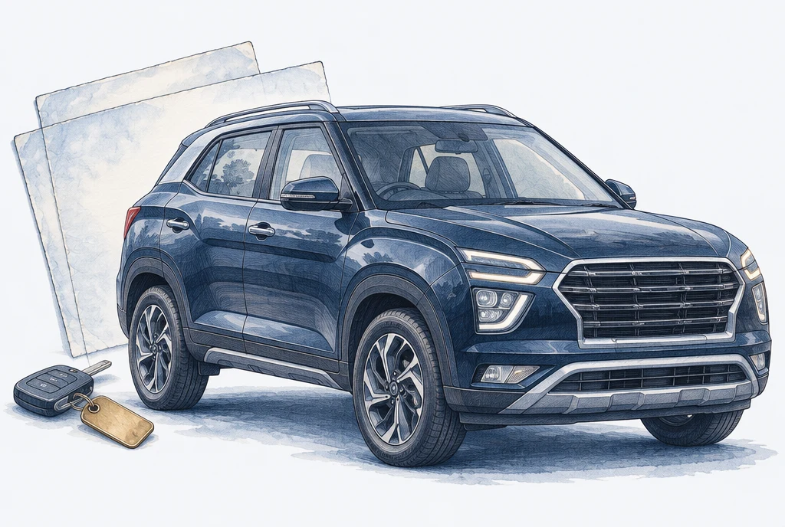
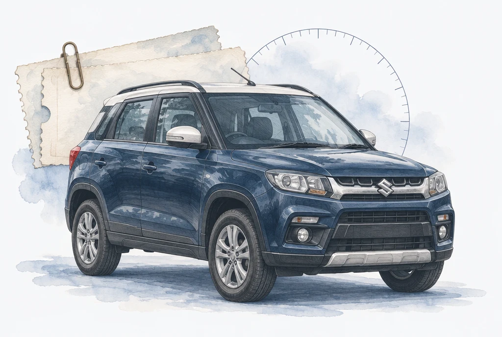
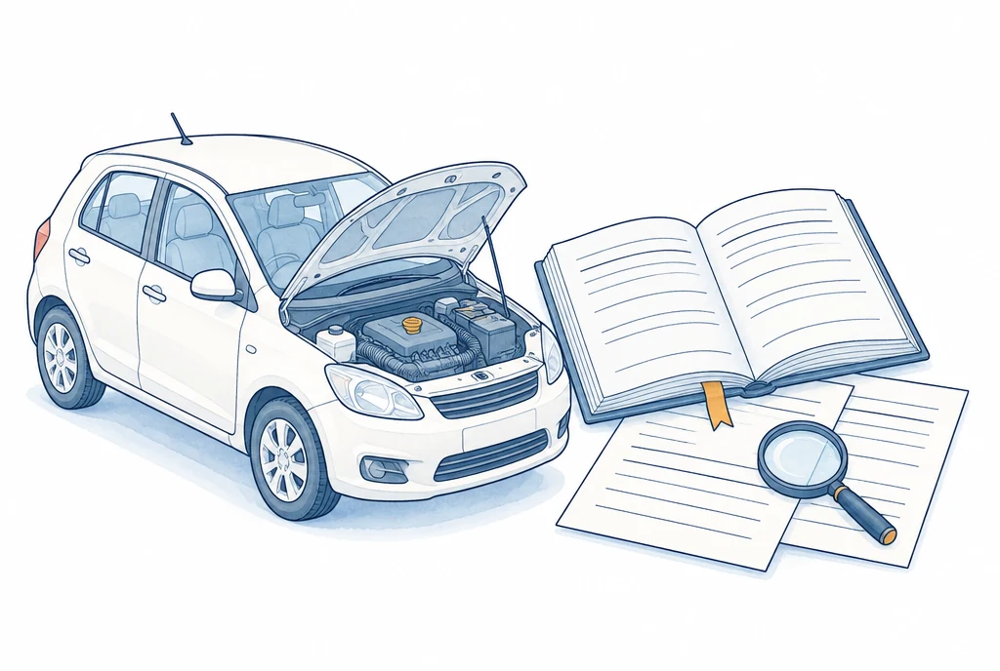
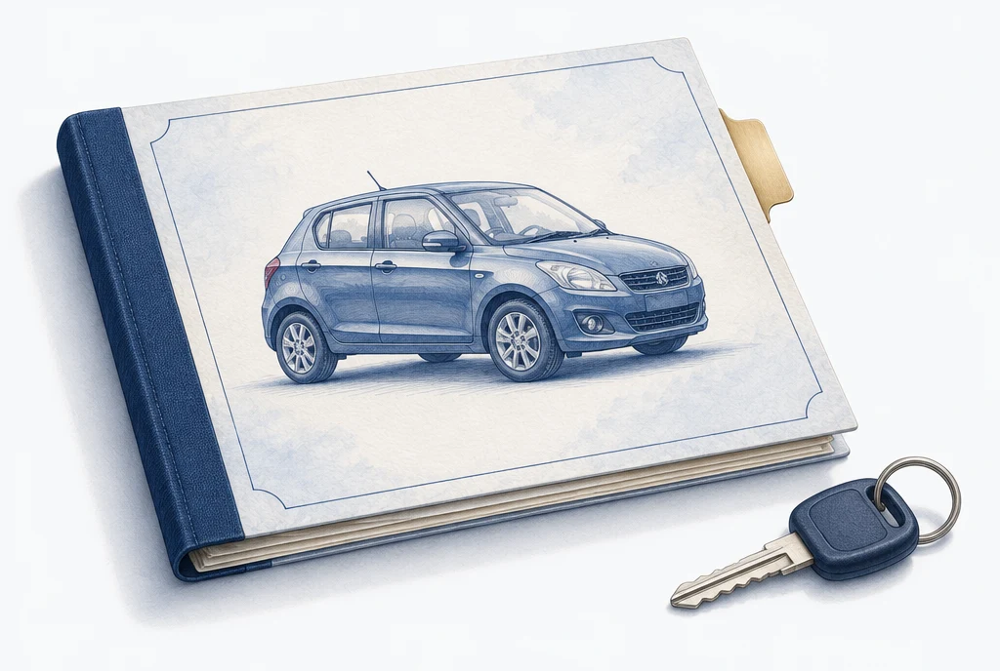

Vehicle history01 / Swift
Maruti Suzuki Swift
2020 · Petrol · Manual
Mileage to verify14,000 km
The last service invoice says 72,000 km. The seller declares 58,000 km. Ask to compare the original documents.
VEHICLE HISTORY · SAMPLE PREVIEW
Understand the available records before you buy. See what to check, what is missing and what to ask the seller.
Explore fictional examples. Live vehicle lookup is not available in this preview.
A private initiative operated by AutoIQ Vehicle Info Private Limited, a Cars24 company.
2020 · Petrol · Manual
The last service invoice says 72,000 km. The seller declares 58,000 km. Ask to compare the original documents.

2021 · Petrol · Manual
The lender entry is active and closure documents have not been provided. Check both before arranging a transfer.

2017 · Diesel · Manual
An unpaid challan totals ₹1,500 in the records. Verify the current payment status with the seller.
EXPLORE THE PREVIEW
These fictional reports show how to read a car’s history. They do not establish live coverage for a make, model or registration.
Live vehicle lookup is not available in this preview. Report availability, price and delivery for your own car are not offered here.
Example: a 2020 Swift with conflicting mileage records. The car is one example, not a limit on who this preview is for.
The later reading
Check the original documents and the seller’s explanation. The difference alone does not establish tampering.
See what each section helps you check. These details use the Swift sample; available records vary by vehicle.
Start with the basics. Do the registration details match the car and the person selling it?
View registration recordsFirst ownerRegistration valid to 7 Jul 2035
Follow the dated readings. A later, lower declaration gives you a specific question to ask.
View mileage recordsAsk to see the original service invoice.
An active lender entry needs a follow-up. Ask for closure documents before discussing the transfer.
Review the lender entry
Lender entry activeLoan balance unavailable
A claim starts a conversation about the work. Read the invoice and inspect the repair.
Review the repair record₹42,000 claim recorded16 Aug 2023 · settled
Check unpaid entries and document dates. Verify the current status with the seller.
Review challans and documents₹3,000 in unpaid entriesCheck payment before transfer
Put the asking price beside the history and the car’s condition. A range is a starting point.
View the price contextAn estimate, not an offer.
A short checklist to take to the seller.
Start with the dated record and its source. Keep a seller declaration separate from a service invoice.
View mileage recordsCompare the original invoice, the vehicle details and the odometer. Ask the seller to explain the gap.
View mileage recordsUse the history to focus an inspection and test drive. Check what the records cannot tell you.
View vehicle photosBEFORE YOU USE A REPORT

This is a preview with ten fictional reports. Live vehicle lookup is not available. The examples do not confirm coverage for your car.
No. Coverage depends on the vehicle and available sources. Review which records were found, which searches returned no result and which information was unavailable.
No. It shows that the records conflict. Compare the original documents, odometer and seller’s explanation before drawing a conclusion.
No. Records describe available history. A physical inspection assesses the car today. Use both, along with a test drive.
A condition score describes predicted physical condition. Read it with the supporting records and an inspection. Sample scores are preset for this preview; legal and financial findings are shown separately.
No. VIB is operated by AutoIQ Vehicle Info Private Limited, a CARS24 company. It is a private initiative, not a government body, regulator or statutory authority.
THE BUYER’S READING ROOM
Short guides to the records that deserve a closer look.
 READING THE HISTORY
READING THE HISTORYCompare dates, readings and original documents.
Read the mileage guideBEFORE THE TRANSFERUnderstand the entry and the documents to request.
Read the finance guide
AT THE CARUse the records to focus your questions in person.
Read the inspection guideChoose an example that matches your question. Each sample explains its findings, limits and what to ask next.
Choose a sample report
Questions about a report or a partnership?
Contact VIB support